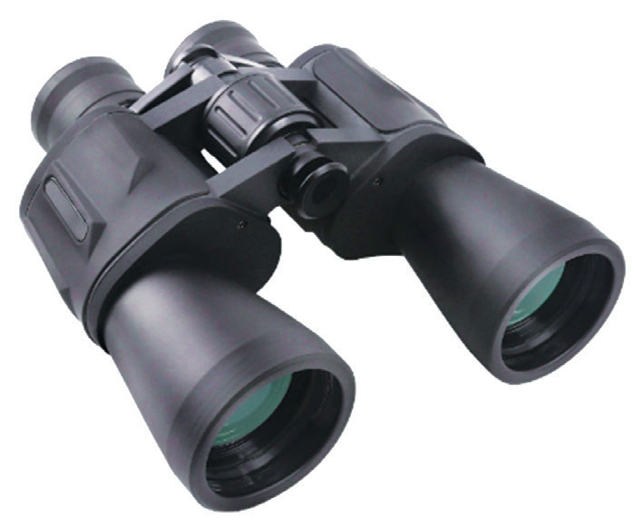
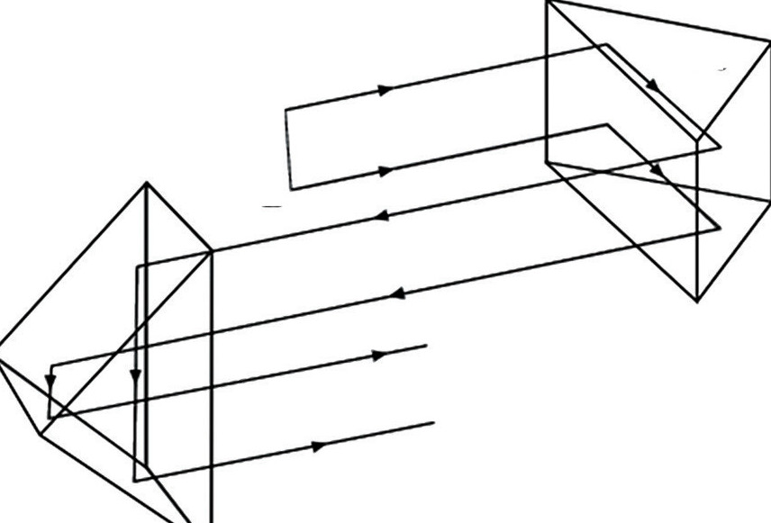

Structure of binoculars
Binoculars can be considered as having two telescopes that are exactly the same and placed beside each other, such that they accurately point in the same direction. This allows the observer to use both eyes when looking at distant objects. The main components of binoculars are the eyepiece, the objective lens and prisms. The objective lens focuses a distant object to a point near the focal point of the eyepiece, which magnifies that image. A pair of prisms inverts the image so that it can be seen properly upright by the eyes. Other parts are the focusing system, which allows the lenses to be moved back and forth. Figure 6.10 shows some parts of binoculars.

Mode of action of binoculars
Two objective lenses are situated at the ends of both telescopes making the binoculars. The purpose of the objective lens is to collect light from the object that the user is looking at and form the image of the object at or near the focal point of the eyepiece. The eyepiece can be thought of as a magnifying glass. It picks up the small image formed by the objective lens and magnifies it so that the observer can clearly see the object. However, when light is refracted through the objective, the light rays cross over, resulting in an upside-down image. The eyepiece simply magnifies this image so that the viewer sees the object upside down. This problem can be solved by deploying a pair of prisms. These prisms are essentially used to rotate and reflect the image using the principle of total internal reflection. To rotate the image 180 degrees, prisms are arranged in a way that each prism effectively rotates the image 90 degrees. Normally, two types of prisms are used in binoculars: roof prisms and porro prisms. Figure 6.11 shows how image inversion is achieved in binoculars.

Magnification of binoculars
Since binoculars are made of two identical refracting telescopes, the magnifying power of the binoculars can be calculated as in the case of the astronomical telescope.